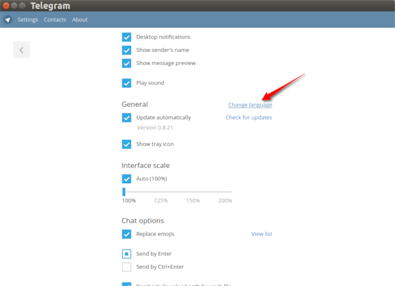
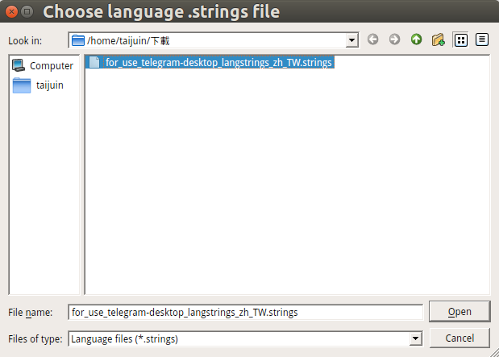
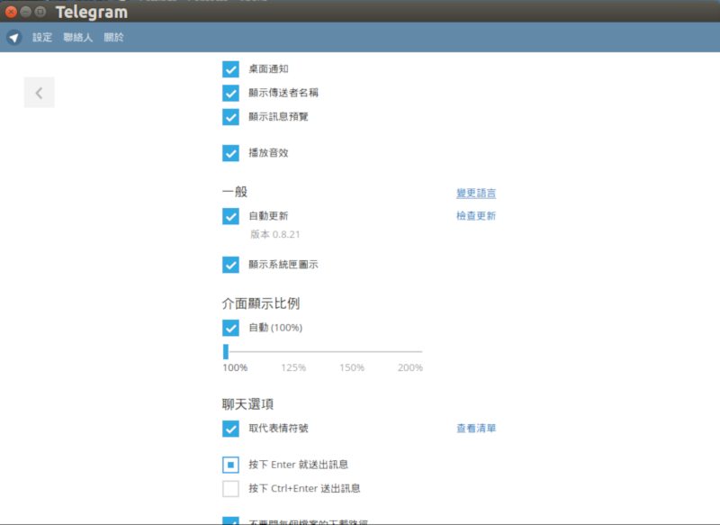

首頁 >
程式的使用 > Telegram Desktop 的中文化（官方網站）（官方Twitter）
首先感謝網友 goodman3654 之前所提供的中文化檔案：這裡 。
Telegram 更新紀錄
1.請加入下列頻道，可直接在頻道中，下載中文化檔案，及收到一些相關訊息：
Telegram 正體中文：https://telegram.me/Tele_zh_TW
本站的电报简体中文化：https://telegram.me/Tele_zh_CN
----------------------------------------------------------------------------------------
如果您是简体中文的用戶，也可以选择大陆网友提供的简体中文化文件发布频道：
Telegram-zh_CN Project：https://telegram.me/transfortelegram
简体中文部份，本站仅提供链接。内容为以下网站相关人员所贡献：
----------------------------------------------------------------------------------------
2.下載好檔案後，可在 Telegram Desktop 中，套用中文化檔案：（資訊來源：請看 原文）
進入 Telegram Desktop 程式的「Settings」中，按住您鍵盤上的 " Shift " 鍵和 " Alt " 鍵，然後點擊 " Change language " 的連結。
（另一種方式是，在「Settings」頁面，輸入 " loadlang " 。沒有輸入框！）

然後取代原本該出現的「語言清單」，您會看到一個「選擇檔案對話框」。請選擇您的中文化檔案。

3.然後就完成中文化了！
